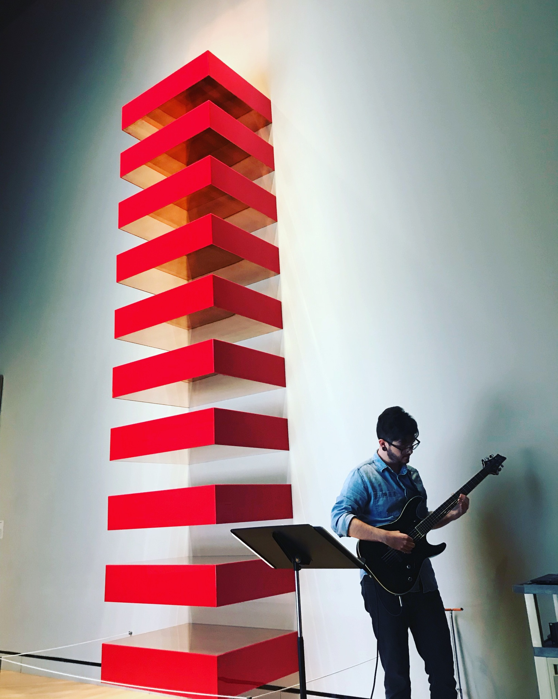

GUNNER BASINGER
Gunner Basinger (b. 1991) is a composer, sound artist and guitarist writing acoustic and electroacoustic pieces that are concerned with the implementation of modernist forms in contemporary electronic music. He employs found recordings, homemade instruments and artificial extended techniques to craft works which juxtapose divergent ideas into unique deep listening experiences. Basinger has 5 releases for electronics and ensemble, has had film scores premiered at festivals in Nova Scotia Canada, gallery installations and performances at Crystal Bridges Museum of American art and has released his first full length electroacoustic music album entitled ‘’Object”.
News
Upcoming
Some news heading here....
News content here....
All
Some news heading here....
News content here....